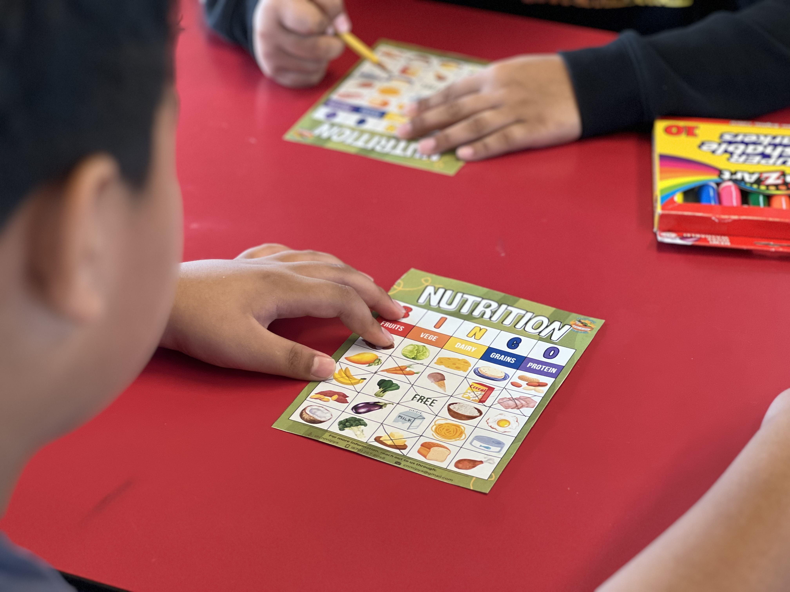

Prévention et lutte contre les maladies non transmissibles
Non-communicable Diseases
Le Programme de prévention et de lutte contre les maladies non transmissibles (MNT) vise à accompagner l'Océanie dans les efforts déployés pour combattre notamment les maladies cardiovasculaires, le cancer, le diabète et les maladies pulmonaires chroniques ainsi que leurs facteurs de risque principaux, tels que la consommation d'aliments et de boissons néfastes pour la santé, le manque d'activité physique ainsi que la consommation de tabac et d'alcool. Le Programme permet d'apporter un appui concret aux pays membres, afin qu'ils puissent soutenir l'engagement de leurs dirigeants politiques dans ce domaine, mieux mettre en application leurs stratégies et lois, renforcer leurs capacités (mise à disposition de ressources et formations), intensifier les échanges avec les différents services publics et avec les communautés, et consolider le suivi et l'évaluation des mesures prises contre les MNT.
The Non-communicable Diseases (NCDs) prevention and control programme supports the Pacific region in its efforts to tackle diseases such as heart disease, cancer, diabetes and chronic lung diseases, and their key risk factors, including the consumption of unhealthy foods and drinks, lack of exercise, smoking and drinking. The NCD programme actively supports member countries to improve the commitment of their political leaders, enhance implementation of policies and laws, strengthen capacity through the provision of resources and training, increase engagement with government and communities, develop innovative technology, and strengthen monitoring and evaluation of NCD interventions.

En réponse à la crise des MNT, la CPS a lancé le projet régional Wake Up! en 2017. Ce projet a permis d'apprendre à de jeunes participants des techniques de communication, le but étant qu'ils puissent sensibiliser leurs communautés aux MNT en recourant à diverses techniques artistiques, telles que la création de vidéos, la peinture et le dessin. En prenant soin de leur santé dès leur plus jeune âge et en cultivant un mode de vie sain, les jeunes peuvent joindre le geste à la parole et servir de modèles pour leurs pairs.
In response to the NCD crisis, we launched the Wake Up! Regional Project in 2017. We trained and educated young people on communication techniques to raise communities' awareness about NCDs through artforms like films, painting, drawing, etc. By adopting and sustaining healthy behaviours early in life, young people can walk the talk and become role models for their peers.